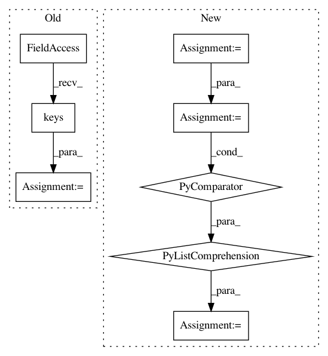

7e470179b0d874c43ec6d5dba11d7981ad83dff1,chainercv/datasets/sintel/sintel_dataset.py,SintelDataset,__init__,#SintelDataset#Any#Any#,58
Before Change
data_dir = os.path.join(data_root, "training")
self.data_dir = data_dir
self.paths = self._collect_data(data_dir)
self.keys = self.paths.keys()
self.mode = mode
def __len__(self):
After Change
This class returns tuple of (source, target, flow) as :meth:`get_example`
is called.
`source` is the image of the source image and `target` is the image of
the target image which are both in CHW format. `flow` represents optical
flow from the source to the target whose shape is :math:`(3, H, W)`.
:math:`H` and :math:`W` are the height and the width of images.
Args:
data_dir (string): Path to the root of the training data. If this is
:obj:`auto`, this class will automatically download data for you
under :obj:`$CHAINER_DATASET_ROOT/pfnet/chainercv/sintel`.
In pattern: SUPERPATTERN
Frequency: 3
Non-data size: 8
Instances
Project Name: chainer/chainercv
Commit Name: 7e470179b0d874c43ec6d5dba11d7981ad83dff1
Time: 2017-03-10
Author: yuyuniitani@gmail.com
File Name: chainercv/datasets/sintel/sintel_dataset.py
Class Name: SintelDataset
Method Name: __init__
Project Name: hanxiao/bert-as-service
Commit Name: b44d6115097e2bebc4a1ecef869e04e2c60af7bb
Time: 2018-12-15
Author: hanhxiao@tencent.com
File Name: benchmark.py
Class Name:
Method Name:
Project Name: pantsbuild/pants
Commit Name: f652b7ca5dee09e6331187551019921e9c1a6f11
Time: 2013-11-25
Author: benjy@foursquare.com
File Name: src/python/twitter/pants/tasks/scala_compile.py
Class Name: ScalaCompile
Method Name: _get_deleted_sources